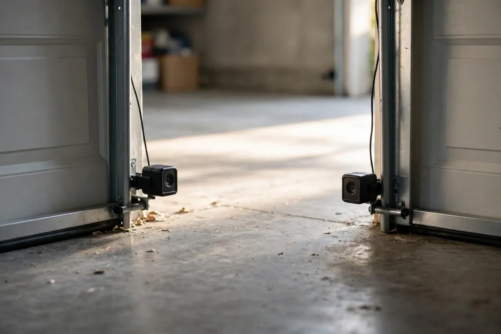
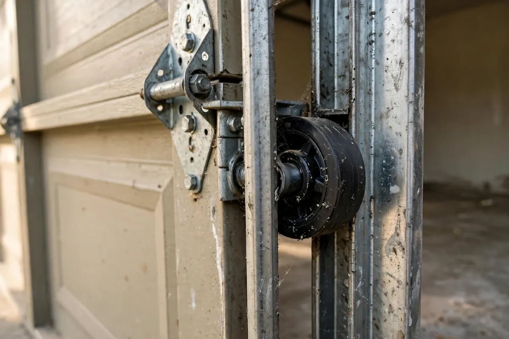

Garage Door Services in Zion, IL
Eight garage door services in Zion, Illinois, from Milwaukee Garage Doors Inc. Each service below has its own page: what it covers, the problems it addresses, and the questions customers ask. Call (224) 842-7761. Open 24 hours, every day.
Ways we can help
What Each Service Covers
The eight services below are kept separate on purpose: each page covers one system or one decision, so repair, replacement, springs, openers, panels, hardware, maintenance, and emergency work do not blur together. Start with the page that matches the problem.
01
Garage Door Repair
The general repair page. It covers diagnosis and triage for the door as a whole — springs, cables, rollers, tracks, panels, and the opener — and links to the page for each system. If a door sticks, slams, grinds, or stops halfway, start here.
View service 02Garage Door Installation & Replacement
One combined page for a whole new door, whether it is a first installation or a replacement. Materials and styles, insulated doors and R-value, sizes for single and double garages, and whether the existing opener is reused.
View service 03Garage Door Spring Replacement
Torsion and extension springs on one page. Broken-spring signs, the difference between spring types, paired replacement, and why spring work under tension is technician-only work.
View service 04Garage Door Opener Repair & Installation
The opener system: repair, new installation, drive types, remotes and keypads, safety sensors and auto-reverse, and smart and Wi-Fi upgrades on one page.
View service 05Garage Door Panel Replacement
Replacing part of the door leaf: one panel or section, matching style, color, windows, and insulation, and when a whole new door makes more sense instead.
View service 06Garage Door Off-Track, Cable & Roller Repair
The guidance hardware system: tracks, rollers, hinges, lift cables, drums, and brackets, and the off-track failure that follows when that system fails. A crooked or jammed door should not be forced.
View service 07Garage Door Maintenance & Tune-Up
The preventive page: what a tune-up includes, how often servicing is discussed, safety checks for sensors, auto-reverse, and balance, and what homeowners can safely do themselves.
View service 08Emergency Garage Door Repair
For a door stuck open, a car trapped inside, or a door that is hanging or unsafe. Milwaukee Garage Doors Inc is open 24 hours, every day. Call (224) 842-7761.
View serviceWhat a Visit Typically Involves, in General Terms
How a Garage Door Call Works
From the first call to the final check, here is the general shape of a service call. The details depend on the door, the opener, and what is found on site. That outline is general-guide language: it is not asserted here as this business's process, and the contents of any visit are established on the call.
STEP 01
Call And Describe It
Describe what the door is doing: it will not close, it bangs, it hangs crooked, or the opener hums but nothing moves. Have the address and a description of the door ready.

Have a Question?Talk with the local team.(224) 842-7761
About the work
Garage Door Work in an Older Housing Stock
Most Zion homes were built before 2000 (88.9%) and nearly two-thirds before 1980 (64.4%), so garage doors and openers in the city span many ages and types, from older detached garages on the grid to newer attached garages in the western subdivisions. The service pages describe each system separately, so the details match the door.
Before the visit
Garage Door Service Questions in Zion, IL
Common questions about garage door services in Zion, answered in general terms. For a specific door, call (224) 842-7761.
Still wondering?(224) 842-7761
Repair addresses a fault in the existing door; replacement fits a whole new door. The choice depends on the extent of the damage, the age and style of the door, and whether matching parts are available. The repair page and the installation and replacement page describe each option, and the panel page covers replacing one section.
Sometimes. Whether one panel or section can be replaced depends on the extent of the damage, the age and style of the door, and whether a matching panel is available. If the door model or style is discontinued, a whole new door may be the option instead. See the panel replacement page.
Torsion springs mount above the door and twist to counterbalance it; extension springs run along the horizontal tracks and stretch. Which type a door has is identified by its mounting. Both types are covered on the spring replacement page, and spring work is described there as technician-only work.
The opener page covers the decision in general terms: the condition and age of the opener, whether the fault is in the motor, the drive, the controls, or the safety sensors, and whether a smart or Wi-Fi upgrade is wanted. Drive types — chain, belt, screw, and jackshaft — are explained there.
There is no single schedule that fits every door; use and age affect what a door needs. The maintenance page describes what a tune-up includes and the safety checks involved — sensors, auto-reverse, and balance. Test sensors and auto-reverse regularly, and check the door before winter, when cold weather adds strain.
Ready to call?
Need Garage Door Help in Zion?
A broken spring, a dead opener, or a door that will not close: call (224) 842-7761. Milwaukee Garage Doors Inc is open 24 hours, every day.
Start with the basics
Call Milwaukee Garage Doors Inc
Reach Milwaukee Garage Doors Inc at (224) 842-7761 for repairs, installation, and maintenance in Zion, Illinois. The company is open 24 hours, every day. Phone is the only contact channel.
CALL(224) 842-7761
HOURSOpen 24 hours, every day